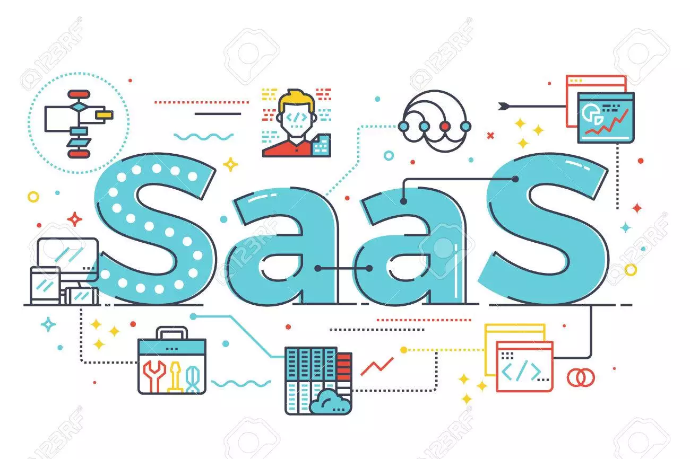

Post #1
SaaS — Software as a Service (Software como Serviço)
Por fim, qualquer pessoa conhece o SaaS, mesmo que não saiba. Nesse terceiro modelo de nuvem, você pode ter acesso ao software sem comprar a sua licença, utilizando-o a partir da Cloud Computing, muitas vezes com recursos limitados. No entanto, também existem planos de pagamento nos quais é cobrada uma taxa fixa ou um valor que varia de acordo com o uso. Muitos CRMs ou ERPs trabalham no sistema SaaS. Assim, o acesso a esses softwares é feito usando a internet. Os dados, contatos e demais informações podem ser acessados de qualquer dispositivo, dando mais mobilidade à equipe. Falamos que qualquer um conhece o SaaS porque sites como o Facebook e o Twitter ou aplicativos como o Skype, OneDrive, Google Docs e o Office 365 funcionam dessa maneira. Neles, tudo é disponibilizado na nuvem, para que muitos usuários consigam ter acesso ao serviço pelo browser ou por um software — como no caso do Skype.